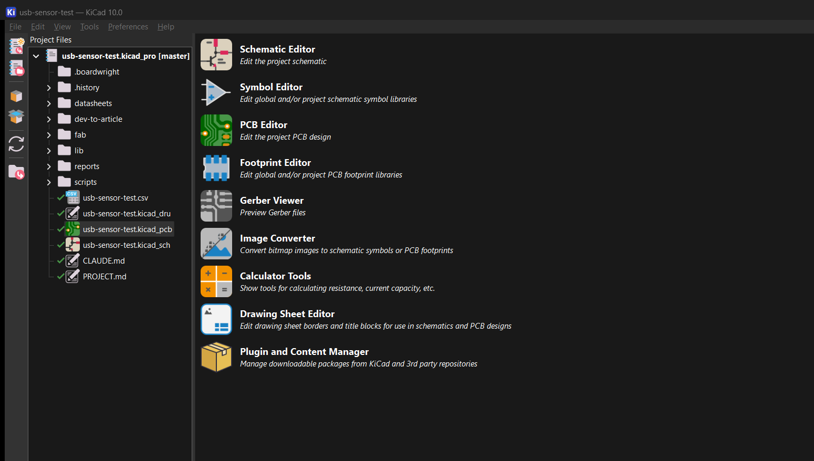
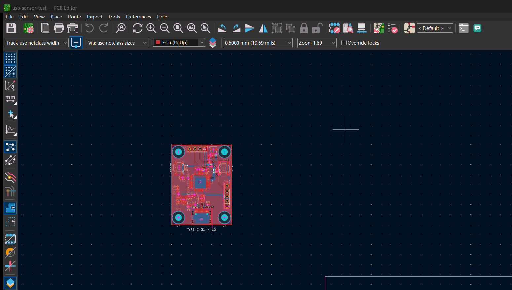
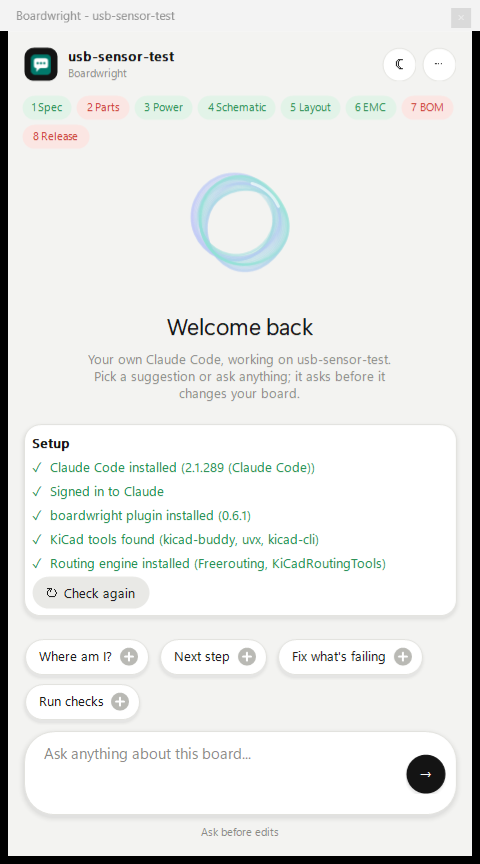
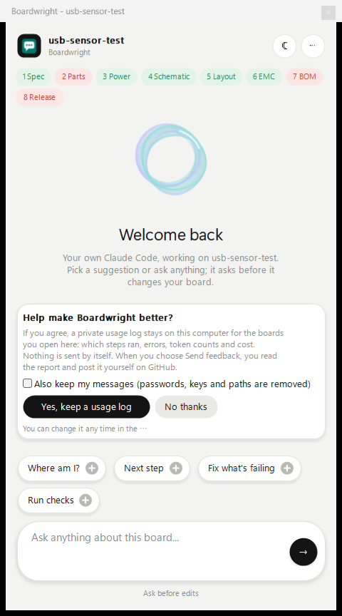
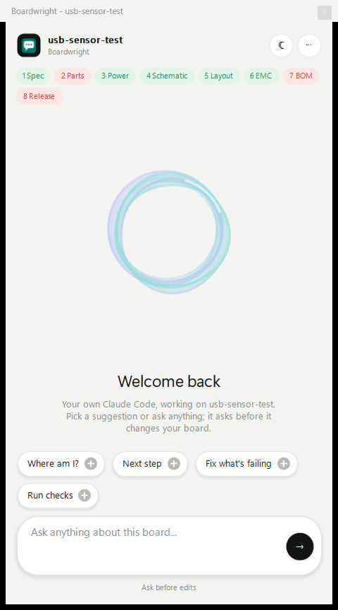
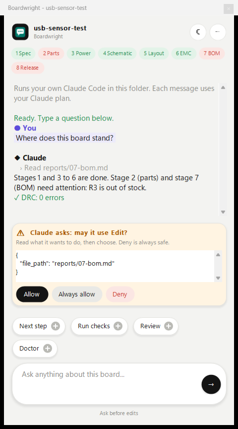
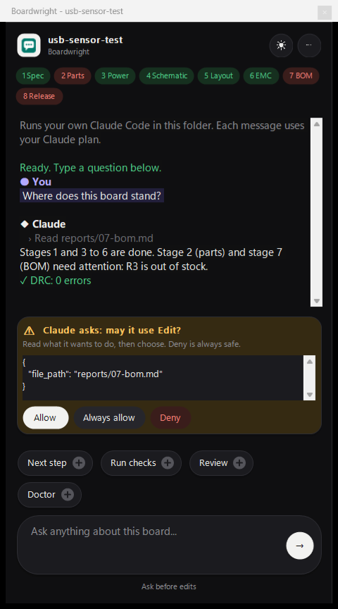

Boardwright is a helper that lives inside KiCad. You talk to it in a chat window beside the PCB Editor. It takes a board from an idea to factory files in eight stages:
1 Spec 2 Parts 3 Power 4 Schematic 5 Layout 6 EMC 7 BOM 8 Release
Each stage ends with a check, called a gate. If a gate fails, Boardwright stops and shows you why. It does not carry on and hope.
Tick each box before you go on.
boardwright-kicad.zip from the GitHub Releases page: https://github.com/Pratham7767/Boardwright/releasesYou do not have to unzip the file. KiCad opens it for you.
Do these baby steps in order.
Start KiCad 10 and open a project. You see the project manager: your project files on the left and the editors on the right.

boardwright-kicad.zip.Boardwright talks to KiCad through this switch.
If you used one of the one-command installers below, it does this for you.
install/install.ps1 (Windows) and install/install.sh (Linux) do the install in one command. docs/INSTALL.md has the details.In the project manager, double-click PCB Editor. Your board opens.

Look at the right end of the top toolbar. The green speech-bubble icon at the far right is the Boardwright button. The icon to its left is KiCad's scripting console. Click the green one.
The chat opens docked to the right side of the PCB Editor and follows it.
The first time, the chat shows a Setup list. Each line has a tick (fine) or a cross (needs you).
| Check | If it has a cross |
|---|---|
| Claude Code installed | Click the button. It opens the official install page and copies the command. |
| Signed in | Click Sign in. Claude Code's own sign-in starts in your browser. Log in there. |
| The Boardwright plugin | Click Install, or let the chat use the copy that came with the add-on. |
| KiCad helper tools | Click Install helpers. A console opens and asks before each install. |
| Routing engine (optional) | Click Install engine. It shows what it downloads and asks first. See "The routing engine". |
Anything that is missing shows a red or amber line with a button. Click the button and follow it. When everything is green you are done.
Click Check again to re-run the checks. Reopen Setup later from the ⋯ menu.
Signing in is Claude Code's own browser login. Boardwright never sees your password. The sign-in stays after you close and reopen KiCad.

After sign-in the chat asks if you want a private usage log.
Nothing is sent by itself. You can change your mind any time in the ⋯ menu (see "Feedback").

You now see the welcome screen. Move on to the tour.
This is what you see for a board that is already in progress.

| When | Pills |
|---|---|
| New folder | Start a new board (puts "I want to design a board that " in the box for you to finish), Use my schematic, Check my setup |
| Board in progress | Where am I?, Next step, Fix what's failing, Run checks. If you chatted about this board before, Continue last chat also appears. |
| During a conversation | Next step, Run checks, Review (the strongest model checks the work against the evidence), Doctor (are the tools installed and working?) |

Click the moon button for night colours. It becomes a sun. Click the sun to go back.

| Item | What it does |
|---|---|
| How much Claude may do | Ask before edits: you approve every change. Safest, and the default. Auto-accept file edits. Plan only: changes nothing. |
| Model | Your default, Opus, Sonnet or Haiku. |
| Colours | Follow my computer, Day, or Night. |
| Dock to the PCB Editor | Puts the chat back beside the editor. |
| New chat | Starts a fresh conversation. |
| Setup checks | Reopens the checks from Step 6. |
| Send feedback... | See "Feedback". |
| Keep a usage log for this board | Switches the private log on or off. |
| KiCad editing tools | Automatic (default): loaded only in the schematic and layout stages, where Claude changes the design; this saves about a third of the tokens of most questions. Always on, or Off. If they are off and Claude needs them, it tells you. |
Your mode and model are remembered.
A worked example: a small USB sensor board. Follow the same pattern for your own idea.
/boardwright:pcb-plan when Claude asks.fab/ folder of your project (stage 8).Routing means drawing the copper tracks between parts. Boardwright can use an optional engine for this.
In Setup checks click Install engine. It shows exactly what it will download, about 220 MB: a Java runtime, Freerouting 2.5.0 and KiCadRoutingTools 0.24.1. Each is checked against a fixed checksum. It asks before it downloads.
/boardwright:pcb-undo. Restoring is your command only.Nothing is sent without you. Switch the log on or off in ⋯ → Keep a usage log for this board.
You do not need KiCad's chat. The same work runs in Claude Code's terminal or app with the boardwright plugin. These commands are available:
/boardwright:pcb-new /boardwright:pcb-run /boardwright:pcb-auto /boardwright:pcb-gates /boardwright:pcb-review /boardwright:pcb-plan /boardwright:pcb-undo /boardwright:pcb-doctor /boardwright:pcb-retro /boardwright:pcb-diagnostics
The plugin also gives Claude an MCP server with compact tools: status, check, find, edit, place, route, plan, history, fab, lifecycle, diagnostics, engine, setup, digest and export. Claude uses them for you.
| Problem | What to do |
|---|---|
| I cannot find the button. | It is the small green speech bubble at the far right of the PCB Editor's top toolbar. It shows only in the PCB Editor, not the project manager. Restart KiCad after installing. Tick Enable KiCad API server. |
| A KiCad message says "Font ... not found; substituting ..." | This may pop up during engine runs from older versions. Click OK. It is harmless. |
| It says "Not signed in". | Use Sign in in Setup checks. |
| Usage limit reached. | Pick another model in ⋯ → Model and send again. |
| Gate | A check at the end of a stage. If it fails, Boardwright stops and shows why. |
| Net | A set of pins that must be connected together, such as ground. |
| DRC | Design rule check. KiCad checks that the board layout follows the rules. |
| ERC | Electrical rules check. KiCad checks the schematic for wiring mistakes. |
| BOM | Bill of materials. The list of parts you need to buy. |
| Footprint | The copper pattern on the board where one part is soldered. |